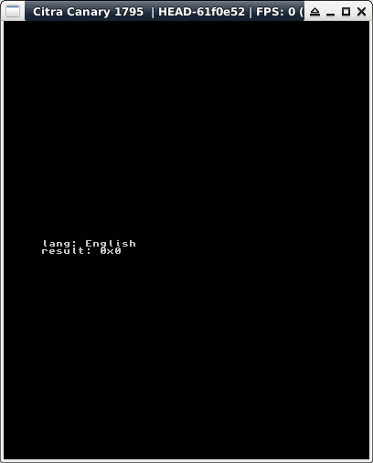

參考資訊：
https://hub.docker.com/r/greatwizard/devkitarm-3ds
main.c
#include <stdio.h>
#include <string.h>
#include <3ds.h>
int main(void)
{
u8 lang = 0;
Result res = 0;
const char *LANG[] = {
"Japanese",
"English",
"French",
"German",
"Italian",
"Spanish",
"Simplified Chinese",
"Korean",
"Dutch",
"Portugese",
"Russian",
"Traditional Chinese"
};
gfxInitDefault();
cfguInit();
consoleInit(GFX_BOTTOM, NULL);
res = CFGU_GetSystemLanguage(&lang);
printf("lang: %s\n", LANG[lang]);
printf("result: 0x%x\n", (int)res);
gspWaitForVBlank();
gfxSwapBuffers();
svcSleepThread(3000000000LL);
gfxExit();
return 0;
}
完成
